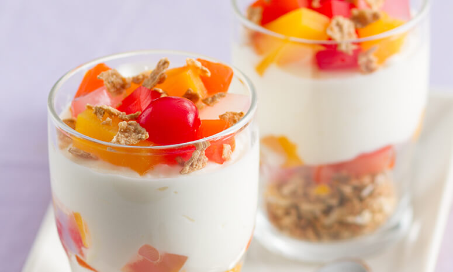

Fruit Yogart
Ingredients
2 pcs granola bars (store bought), coarsely crushed
1 can DEL MONTE Fiesta Fruit Cocktail (432g), drained and chilled
1 cup yoghurt
1/2 cup cereal
Preparation
Arrange granola at the bottom of 7 individual cups.
Top with DEL MONTE Fiesta Fruit Cocktail (reserve some fruits as topping) then spread a layer of yoghurt.
Top with reserved fruit cocktail and cereals.
This dessert contains vitamin B2 needed for healthy skin and energy production and vitamin C that helps in wound healing and the prevention of infections.
To keep the crunch of your cereal, assemble only when ready to serve. The contrasting textures make this dessert more delicious.